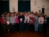

>
|
Compton and Shawford Festival Choir
The choir rehearses on Monday evenings from September to May, commencing at 7:30 for 7:45, in the Compton and Shawford Community Hall, Pearson Lane, Shawford. The atmosphere is cheerful and relaxed. We sing mainly from the classical choral repertoire, and this has recently included works by Charpentier, Fauré, Rutter and Bach. New members are always welcome. The choir was founded in 1921 for the express purpose of participating in the WCMF concerts, which can be inspiring occasions. Every year in May we take part in one of them. In addition, we usually hold a concert of our own in December. We are fortunate to have the capable and experienced John Sutton as conductor and director of music. He manages to combine high musical skill with cheerfulness and good humour. Contact the Society Secretary: David Anderson |
Click image to view  |